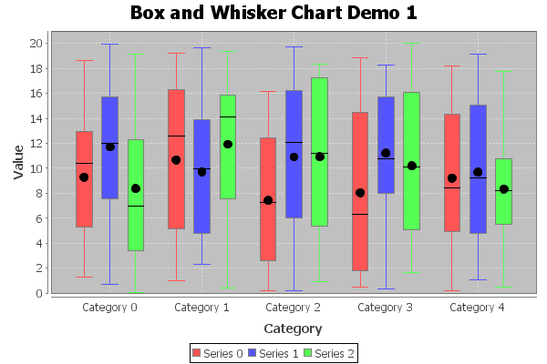

Class BoxAndWhiskerRenderer
- java.lang.Object
-
- org.jfree.chart.renderer.AbstractRenderer
-
- org.jfree.chart.renderer.category.AbstractCategoryItemRenderer
-
- org.jfree.chart.renderer.category.BoxAndWhiskerRenderer
-
- All Implemented Interfaces:
java.io.Serializable,java.lang.Cloneable,LegendItemSource,CategoryItemRenderer,org.jfree.util.PublicCloneable
public class BoxAndWhiskerRenderer extends AbstractCategoryItemRenderer implements java.lang.Cloneable, org.jfree.util.PublicCloneable, java.io.Serializable
A box-and-whisker renderer. This renderer requires aBoxAndWhiskerCategoryDatasetand is for use with theCategoryPlotclass. The example shown here is generated by theBoxAndWhiskerChartDemo1.javaprogram included in the JFreeChart Demo Collection:
- See Also:
- Serialized Form
-
-
Field Summary
-
Fields inherited from class org.jfree.chart.renderer.AbstractRenderer
DEFAULT_OUTLINE_PAINT, DEFAULT_OUTLINE_STROKE, DEFAULT_PAINT, DEFAULT_SHAPE, DEFAULT_STROKE, DEFAULT_VALUE_LABEL_FONT, DEFAULT_VALUE_LABEL_PAINT, ZERO
-
-
Constructor Summary
Constructors Constructor Description BoxAndWhiskerRenderer()Default constructor.
-
Method Summary
All Methods Instance Methods Concrete Methods Modifier and Type Method Description voiddrawHorizontalItem(java.awt.Graphics2D g2, CategoryItemRendererState state, java.awt.geom.Rectangle2D dataArea, CategoryPlot plot, CategoryAxis domainAxis, ValueAxis rangeAxis, CategoryDataset dataset, int row, int column)Draws the visual representation of a single data item when the plot has a horizontal orientation.voiddrawItem(java.awt.Graphics2D g2, CategoryItemRendererState state, java.awt.geom.Rectangle2D dataArea, CategoryPlot plot, CategoryAxis domainAxis, ValueAxis rangeAxis, CategoryDataset dataset, int row, int column, int pass)Draw a single data item.voiddrawVerticalItem(java.awt.Graphics2D g2, CategoryItemRendererState state, java.awt.geom.Rectangle2D dataArea, CategoryPlot plot, CategoryAxis domainAxis, ValueAxis rangeAxis, CategoryDataset dataset, int row, int column)Draws the visual representation of a single data item when the plot has a vertical orientation.booleanequals(java.lang.Object obj)Tests this renderer for equality with an arbitrary object.RangefindRangeBounds(CategoryDataset dataset)Returns the range of values from the specified dataset that the renderer will require to display all the data.java.awt.PaintgetArtifactPaint()Returns the paint used to color the median and average markers.booleangetFillBox()Returns the flag that controls whether or not the box is filled.doublegetItemMargin()Returns the item margin.LegendItemgetLegendItem(int datasetIndex, int series)Returns a legend item for a series.doublegetMaximumBarWidth()Returns the maximum bar width as a percentage of the available drawing space.booleangetUseOutlinePaintForWhiskers()Returns the flag that, iftrue, causes the whiskers to be drawn using the series outline paint.doublegetWhiskerWidth()Returns the width of the whiskers as fraction of the bar width.CategoryItemRendererStateinitialise(java.awt.Graphics2D g2, java.awt.geom.Rectangle2D dataArea, CategoryPlot plot, int rendererIndex, PlotRenderingInfo info)Initialises the renderer.booleanisMeanVisible()Returns the flag that controls whether or not the mean indicator is draw for each item.booleanisMedianVisible()Returns the flag that controls whether or not the median indicator is draw for each item.voidsetArtifactPaint(java.awt.Paint paint)Sets the paint used to color the median and average markers and sends aRendererChangeEventto all registered listeners.voidsetFillBox(boolean flag)Sets the flag that controls whether or not the box is filled and sends aRendererChangeEventto all registered listeners.voidsetItemMargin(double margin)Sets the item margin and sends aRendererChangeEventto all registered listeners.voidsetMaximumBarWidth(double percent)Sets the maximum bar width, which is specified as a percentage of the available space for all bars, and sends aRendererChangeEventto all registered listeners.voidsetMeanVisible(boolean visible)Sets the flag that controls whether or not the mean indicator is drawn for each item, and sends aRendererChangeEventto all registered listeners.voidsetMedianVisible(boolean visible)Sets the flag that controls whether or not the median indicator is drawn for each item, and sends aRendererChangeEventto all registered listeners.voidsetUseOutlinePaintForWhiskers(boolean flag)Sets the flag that, iftrue, causes the whiskers to be drawn using the series outline paint, and sends aRendererChangeEventto all registered listeners.voidsetWhiskerWidth(double width)Sets the width of the whiskers as a fraction of the bar width and sends aRendererChangeEventto all registered listeners.-
Methods inherited from class org.jfree.chart.renderer.category.AbstractCategoryItemRenderer
addEntity, addItemEntity, calculateDomainMarkerTextAnchorPoint, calculateRangeMarkerTextAnchorPoint, clone, createState, drawBackground, drawDomainGridline, drawDomainMarker, drawItemLabel, drawOutline, drawRangeGridline, drawRangeLine, drawRangeMarker, findRangeBounds, getBaseItemLabelGenerator, getBaseItemURLGenerator, getBaseToolTipGenerator, getColumnCount, getDomainAxis, getDrawingSupplier, getItemLabelGenerator, getItemMiddle, getItemURLGenerator, getLegendItemLabelGenerator, getLegendItems, getLegendItemToolTipGenerator, getLegendItemURLGenerator, getPassCount, getPlot, getRangeAxis, getRowCount, getSeriesItemLabelGenerator, getSeriesItemURLGenerator, getSeriesToolTipGenerator, getToolTipGenerator, getToolTipGenerator, hashCode, setBaseItemLabelGenerator, setBaseItemURLGenerator, setBaseToolTipGenerator, setItemLabelGenerator, setItemURLGenerator, setLegendItemLabelGenerator, setLegendItemToolTipGenerator, setLegendItemURLGenerator, setPlot, setSeriesItemLabelGenerator, setSeriesItemURLGenerator, setSeriesToolTipGenerator, setToolTipGenerator, updateCrosshairValues
-
Methods inherited from class org.jfree.chart.renderer.AbstractRenderer
addChangeListener, calculateLabelAnchorPoint, clearSeriesPaints, clearSeriesStrokes, fireChangeEvent, getAutoPopulateSeriesFillPaint, getAutoPopulateSeriesOutlinePaint, getAutoPopulateSeriesOutlineStroke, getAutoPopulateSeriesPaint, getAutoPopulateSeriesShape, getAutoPopulateSeriesStroke, getBaseCreateEntities, getBaseFillPaint, getBaseItemLabelFont, getBaseItemLabelPaint, getBaseItemLabelsVisible, getBaseLegendShape, getBaseLegendTextFont, getBaseLegendTextPaint, getBaseNegativeItemLabelPosition, getBaseOutlinePaint, getBaseOutlineStroke, getBasePaint, getBasePositiveItemLabelPosition, getBaseSeriesVisible, getBaseSeriesVisibleInLegend, getBaseShape, getBaseStroke, getCreateEntities, getDataBoundsIncludesVisibleSeriesOnly, getDefaultEntityRadius, getItemCreateEntity, getItemFillPaint, getItemLabelAnchorOffset, getItemLabelFont, getItemLabelFont, getItemLabelPaint, getItemLabelPaint, getItemOutlinePaint, getItemOutlineStroke, getItemPaint, getItemShape, getItemStroke, getItemVisible, getLegendShape, getLegendTextFont, getLegendTextPaint, getNegativeItemLabelPosition, getNegativeItemLabelPosition, getPositiveItemLabelPosition, getPositiveItemLabelPosition, getSeriesCreateEntities, getSeriesFillPaint, getSeriesItemLabelFont, getSeriesItemLabelPaint, getSeriesNegativeItemLabelPosition, getSeriesOutlinePaint, getSeriesOutlineStroke, getSeriesPaint, getSeriesPositiveItemLabelPosition, getSeriesShape, getSeriesStroke, getSeriesVisible, getSeriesVisible, getSeriesVisibleInLegend, getSeriesVisibleInLegend, getTreatLegendShapeAsLine, hasListener, isItemLabelVisible, isSeriesItemLabelsVisible, isSeriesVisible, isSeriesVisibleInLegend, lookupLegendShape, lookupLegendTextFont, lookupLegendTextPaint, lookupSeriesFillPaint, lookupSeriesOutlinePaint, lookupSeriesOutlineStroke, lookupSeriesPaint, lookupSeriesShape, lookupSeriesStroke, notifyListeners, removeChangeListener, setAutoPopulateSeriesFillPaint, setAutoPopulateSeriesOutlinePaint, setAutoPopulateSeriesOutlineStroke, setAutoPopulateSeriesPaint, setAutoPopulateSeriesShape, setAutoPopulateSeriesStroke, setBaseCreateEntities, setBaseCreateEntities, setBaseFillPaint, setBaseFillPaint, setBaseItemLabelFont, setBaseItemLabelFont, setBaseItemLabelPaint, setBaseItemLabelPaint, setBaseItemLabelsVisible, setBaseItemLabelsVisible, setBaseItemLabelsVisible, setBaseLegendShape, setBaseLegendTextFont, setBaseLegendTextPaint, setBaseNegativeItemLabelPosition, setBaseNegativeItemLabelPosition, setBaseOutlinePaint, setBaseOutlinePaint, setBaseOutlineStroke, setBaseOutlineStroke, setBasePaint, setBasePaint, setBasePositiveItemLabelPosition, setBasePositiveItemLabelPosition, setBaseSeriesVisible, setBaseSeriesVisible, setBaseSeriesVisibleInLegend, setBaseSeriesVisibleInLegend, setBaseShape, setBaseShape, setBaseStroke, setBaseStroke, setCreateEntities, setCreateEntities, setDataBoundsIncludesVisibleSeriesOnly, setDefaultEntityRadius, setFillPaint, setFillPaint, setItemLabelAnchorOffset, setItemLabelFont, setItemLabelFont, setItemLabelPaint, setItemLabelPaint, setItemLabelsVisible, setItemLabelsVisible, setItemLabelsVisible, setLegendShape, setLegendTextFont, setLegendTextPaint, setNegativeItemLabelPosition, setNegativeItemLabelPosition, setOutlinePaint, setOutlinePaint, setOutlineStroke, setOutlineStroke, setPaint, setPaint, setPositiveItemLabelPosition, setPositiveItemLabelPosition, setSeriesCreateEntities, setSeriesCreateEntities, setSeriesFillPaint, setSeriesFillPaint, setSeriesItemLabelFont, setSeriesItemLabelFont, setSeriesItemLabelPaint, setSeriesItemLabelPaint, setSeriesItemLabelsVisible, setSeriesItemLabelsVisible, setSeriesItemLabelsVisible, setSeriesNegativeItemLabelPosition, setSeriesNegativeItemLabelPosition, setSeriesOutlinePaint, setSeriesOutlinePaint, setSeriesOutlineStroke, setSeriesOutlineStroke, setSeriesPaint, setSeriesPaint, setSeriesPositiveItemLabelPosition, setSeriesPositiveItemLabelPosition, setSeriesShape, setSeriesShape, setSeriesStroke, setSeriesStroke, setSeriesVisible, setSeriesVisible, setSeriesVisible, setSeriesVisible, setSeriesVisibleInLegend, setSeriesVisibleInLegend, setSeriesVisibleInLegend, setSeriesVisibleInLegend, setShape, setShape, setStroke, setStroke, setTreatLegendShapeAsLine
-
Methods inherited from class java.lang.Object
finalize, getClass, notify, notifyAll, toString, wait, wait, wait
-
Methods inherited from interface org.jfree.chart.renderer.category.CategoryItemRenderer
addChangeListener, getBaseItemLabelFont, getBaseItemLabelPaint, getBaseItemLabelsVisible, getBaseNegativeItemLabelPosition, getBaseOutlinePaint, getBaseOutlineStroke, getBasePaint, getBasePositiveItemLabelPosition, getBaseSeriesVisible, getBaseSeriesVisibleInLegend, getBaseShape, getBaseStroke, getItemLabelFont, getItemLabelFont, getItemLabelPaint, getItemLabelPaint, getItemOutlinePaint, getItemOutlineStroke, getItemPaint, getItemShape, getItemStroke, getItemVisible, getNegativeItemLabelPosition, getNegativeItemLabelPosition, getPositiveItemLabelPosition, getPositiveItemLabelPosition, getSeriesItemLabelFont, getSeriesItemLabelPaint, getSeriesNegativeItemLabelPosition, getSeriesOutlinePaint, getSeriesOutlineStroke, getSeriesPaint, getSeriesPositiveItemLabelPosition, getSeriesShape, getSeriesStroke, getSeriesVisible, getSeriesVisible, getSeriesVisibleInLegend, getSeriesVisibleInLegend, isItemLabelVisible, isSeriesItemLabelsVisible, isSeriesVisible, isSeriesVisibleInLegend, removeChangeListener, setBaseItemLabelFont, setBaseItemLabelPaint, setBaseItemLabelsVisible, setBaseItemLabelsVisible, setBaseItemLabelsVisible, setBaseNegativeItemLabelPosition, setBaseNegativeItemLabelPosition, setBaseOutlinePaint, setBaseOutlineStroke, setBasePaint, setBasePositiveItemLabelPosition, setBasePositiveItemLabelPosition, setBaseSeriesVisible, setBaseSeriesVisible, setBaseSeriesVisibleInLegend, setBaseSeriesVisibleInLegend, setBaseShape, setBaseStroke, setItemLabelFont, setItemLabelPaint, setItemLabelsVisible, setItemLabelsVisible, setItemLabelsVisible, setNegativeItemLabelPosition, setNegativeItemLabelPosition, setOutlinePaint, setOutlineStroke, setPaint, setPositiveItemLabelPosition, setPositiveItemLabelPosition, setSeriesItemLabelFont, setSeriesItemLabelPaint, setSeriesItemLabelsVisible, setSeriesItemLabelsVisible, setSeriesItemLabelsVisible, setSeriesNegativeItemLabelPosition, setSeriesNegativeItemLabelPosition, setSeriesOutlinePaint, setSeriesOutlineStroke, setSeriesPaint, setSeriesPositiveItemLabelPosition, setSeriesPositiveItemLabelPosition, setSeriesShape, setSeriesStroke, setSeriesVisible, setSeriesVisible, setSeriesVisible, setSeriesVisible, setSeriesVisibleInLegend, setSeriesVisibleInLegend, setSeriesVisibleInLegend, setSeriesVisibleInLegend, setShape, setStroke
-
-
-
-
Constructor Detail
-
BoxAndWhiskerRenderer
public BoxAndWhiskerRenderer()
Default constructor.
-
-
Method Detail
-
getArtifactPaint
public java.awt.Paint getArtifactPaint()
Returns the paint used to color the median and average markers.- Returns:
- The paint used to draw the median and average markers (never
null). - See Also:
setArtifactPaint(Paint)
-
setArtifactPaint
public void setArtifactPaint(java.awt.Paint paint)
Sets the paint used to color the median and average markers and sends aRendererChangeEventto all registered listeners.- Parameters:
paint- the paint (nullnot permitted).- See Also:
getArtifactPaint()
-
getFillBox
public boolean getFillBox()
Returns the flag that controls whether or not the box is filled.- Returns:
- A boolean.
- See Also:
setFillBox(boolean)
-
setFillBox
public void setFillBox(boolean flag)
Sets the flag that controls whether or not the box is filled and sends aRendererChangeEventto all registered listeners.- Parameters:
flag- the flag.- See Also:
getFillBox()
-
getItemMargin
public double getItemMargin()
Returns the item margin. This is a percentage of the available space that is allocated to the space between items in the chart.- Returns:
- The margin.
- See Also:
setItemMargin(double)
-
setItemMargin
public void setItemMargin(double margin)
Sets the item margin and sends aRendererChangeEventto all registered listeners.- Parameters:
margin- the margin (a percentage).- See Also:
getItemMargin()
-
getMaximumBarWidth
public double getMaximumBarWidth()
Returns the maximum bar width as a percentage of the available drawing space. Take care with the encoding, for example 0.10 is ten percent.- Returns:
- The maximum bar width.
- Since:
- 1.0.10
- See Also:
setMaximumBarWidth(double)
-
setMaximumBarWidth
public void setMaximumBarWidth(double percent)
Sets the maximum bar width, which is specified as a percentage of the available space for all bars, and sends aRendererChangeEventto all registered listeners.- Parameters:
percent- the maximum bar width (a percentage, where 0.10 is ten percent).- Since:
- 1.0.10
- See Also:
getMaximumBarWidth()
-
isMeanVisible
public boolean isMeanVisible()
Returns the flag that controls whether or not the mean indicator is draw for each item.- Returns:
- A boolean.
- Since:
- 1.0.13
- See Also:
setMeanVisible(boolean)
-
setMeanVisible
public void setMeanVisible(boolean visible)
Sets the flag that controls whether or not the mean indicator is drawn for each item, and sends aRendererChangeEventto all registered listeners.- Parameters:
visible- the new flag value.- Since:
- 1.0.13
- See Also:
isMeanVisible()
-
isMedianVisible
public boolean isMedianVisible()
Returns the flag that controls whether or not the median indicator is draw for each item.- Returns:
- A boolean.
- Since:
- 1.0.13
- See Also:
setMedianVisible(boolean)
-
setMedianVisible
public void setMedianVisible(boolean visible)
Sets the flag that controls whether or not the median indicator is drawn for each item, and sends aRendererChangeEventto all registered listeners.- Parameters:
visible- the new flag value.- Since:
- 1.0.13
- See Also:
isMedianVisible()
-
getUseOutlinePaintForWhiskers
public boolean getUseOutlinePaintForWhiskers()
Returns the flag that, iftrue, causes the whiskers to be drawn using the series outline paint.- Returns:
- A boolean.
- Since:
- 1.0.14
-
setUseOutlinePaintForWhiskers
public void setUseOutlinePaintForWhiskers(boolean flag)
Sets the flag that, iftrue, causes the whiskers to be drawn using the series outline paint, and sends aRendererChangeEventto all registered listeners.- Parameters:
flag- the new flag value.- Since:
- 1.0.14
-
getWhiskerWidth
public double getWhiskerWidth()
Returns the width of the whiskers as fraction of the bar width.- Returns:
- The width of the whiskers.
- Since:
- 1.0.14
- See Also:
setWhiskerWidth(double)
-
setWhiskerWidth
public void setWhiskerWidth(double width)
Sets the width of the whiskers as a fraction of the bar width and sends aRendererChangeEventto all registered listeners.- Parameters:
width- a value between 0 and 1 indicating how wide the whisker is supposed to be compared to the bar.- Since:
- 1.0.14
- See Also:
getWhiskerWidth(),CategoryItemRendererState.getBarWidth()
-
getLegendItem
public LegendItem getLegendItem(int datasetIndex, int series)
Returns a legend item for a series.- Specified by:
getLegendItemin interfaceCategoryItemRenderer- Overrides:
getLegendItemin classAbstractCategoryItemRenderer- Parameters:
datasetIndex- the dataset index (zero-based).series- the series index (zero-based).- Returns:
- The legend item (possibly
null). - See Also:
AbstractCategoryItemRenderer.getLegendItems()
-
findRangeBounds
public Range findRangeBounds(CategoryDataset dataset)
Returns the range of values from the specified dataset that the renderer will require to display all the data.- Specified by:
findRangeBoundsin interfaceCategoryItemRenderer- Overrides:
findRangeBoundsin classAbstractCategoryItemRenderer- Parameters:
dataset- the dataset.- Returns:
- The range.
-
initialise
public CategoryItemRendererState initialise(java.awt.Graphics2D g2, java.awt.geom.Rectangle2D dataArea, CategoryPlot plot, int rendererIndex, PlotRenderingInfo info)
Initialises the renderer. This method gets called once at the start of the process of drawing a chart.- Specified by:
initialisein interfaceCategoryItemRenderer- Overrides:
initialisein classAbstractCategoryItemRenderer- Parameters:
g2- the graphics device.dataArea- the area in which the data is to be plotted.plot- the plot.rendererIndex- the renderer index.info- collects chart rendering information for return to caller.- Returns:
- The renderer state.
-
drawItem
public void drawItem(java.awt.Graphics2D g2, CategoryItemRendererState state, java.awt.geom.Rectangle2D dataArea, CategoryPlot plot, CategoryAxis domainAxis, ValueAxis rangeAxis, CategoryDataset dataset, int row, int column, int pass)
Draw a single data item.- Specified by:
drawItemin interfaceCategoryItemRenderer- Parameters:
g2- the graphics device.state- the renderer state.dataArea- the area in which the data is drawn.plot- the plot.domainAxis- the domain axis.rangeAxis- the range axis.dataset- the data (must be an instance ofBoxAndWhiskerCategoryDataset).row- the row index (zero-based).column- the column index (zero-based).pass- the pass index.
-
drawHorizontalItem
public void drawHorizontalItem(java.awt.Graphics2D g2, CategoryItemRendererState state, java.awt.geom.Rectangle2D dataArea, CategoryPlot plot, CategoryAxis domainAxis, ValueAxis rangeAxis, CategoryDataset dataset, int row, int column)
Draws the visual representation of a single data item when the plot has a horizontal orientation.- Parameters:
g2- the graphics device.state- the renderer state.dataArea- the area within which the plot is being drawn.plot- the plot (can be used to obtain standard color information etc).domainAxis- the domain axis.rangeAxis- the range axis.dataset- the dataset (must be an instance ofBoxAndWhiskerCategoryDataset).row- the row index (zero-based).column- the column index (zero-based).
-
drawVerticalItem
public void drawVerticalItem(java.awt.Graphics2D g2, CategoryItemRendererState state, java.awt.geom.Rectangle2D dataArea, CategoryPlot plot, CategoryAxis domainAxis, ValueAxis rangeAxis, CategoryDataset dataset, int row, int column)
Draws the visual representation of a single data item when the plot has a vertical orientation.- Parameters:
g2- the graphics device.state- the renderer state.dataArea- the area within which the plot is being drawn.plot- the plot (can be used to obtain standard color information etc).domainAxis- the domain axis.rangeAxis- the range axis.dataset- the dataset (must be an instance ofBoxAndWhiskerCategoryDataset).row- the row index (zero-based).column- the column index (zero-based).
-
equals
public boolean equals(java.lang.Object obj)
Tests this renderer for equality with an arbitrary object.- Overrides:
equalsin classAbstractCategoryItemRenderer- Parameters:
obj- the object (nullpermitted).- Returns:
trueorfalse.
-
-